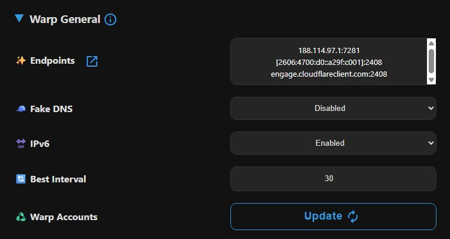

Warp General settings
These settings apply to both Warp and Warp Pro subscriptions.

Remote DNS
Warp remote DNS can be only of type IPv4 for performance and compatibility. The default DNS is Cloudflare public DNS which is a perfect candidate. It's highly recommended to use Cloudflare DNS servers if you insist on changing it, which have most compatibility and efficiency when used with Cloudflare Warp, like:
- 1.1.1.2, 1.0.0.2 (Cloudflare security DNS)
- 1.1.1.3, 1.0.0.3 (Cloudflare adult DNS)
Endpoints - Scanner
Endpoints for Warp function similarly to Clean IPs for VLESS and Trojan. The panel provides a scanner that you can run on Termux (Android), Windows, macOS or Linux and input the results here. Note that the results are not 100% reliable, so testing is necessary. Please note that you have to exit any proxy app before testing, if you use v2rayN, you should completely exit it from taskbar, clearing proxy is not enough.
Info
- Endpoints are formatted as IP:Port or Domain:Port and must be entered one per line.
- For IPv6 addresses, enclose them in square brackets. See the example below:
Fake DNS
You can enable Fake DNS for Warp configs to reduce DNS latency. However, use caution, as it may be incompatible with some applications or interfere with system DNS. If you're unsure about its functionality, avoid enabling it.
Enabling IPv6
If your ISP does not support IPv6, disable it to optimize DNS and proxy performance.
Best Interval
Warp and Warp Pro subscriptions include Best Ping configs. By default, these test configs every 30 seconds to identify the optimal config or Endpoint for connection. On slower networks, this interval may cause lag during activities like video streaming or gaming. You can adjust the interval between 10 and 90 seconds.
Warp Accounts
Updating the accounts retrieves new Warp accounts from Cloudflare. This process does not affect connection speed or other settings.